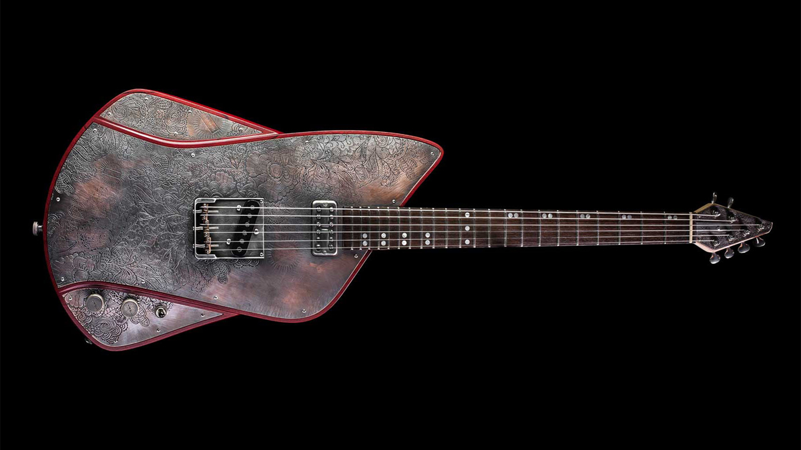
Model 707
Body: Kaya Mahogany
Steel top: Engraved copper plates (body, headstock, backcover)
Finish: Aged metal parts with engravings
Neck: Glued in, Maple with 2 Mahogany Stripes
Fingerboard: Rosewood
Scale / Frets: 25 1/2" · 22
Bridge: Vintage Tele Bridge with Compensated Saddles
Pickups: Neck: 1× TVJones Filtertron HB / Bridge: 1× Leosounds MudCat SC
Electronics: 3-Way Switch
Number of pieces: 1
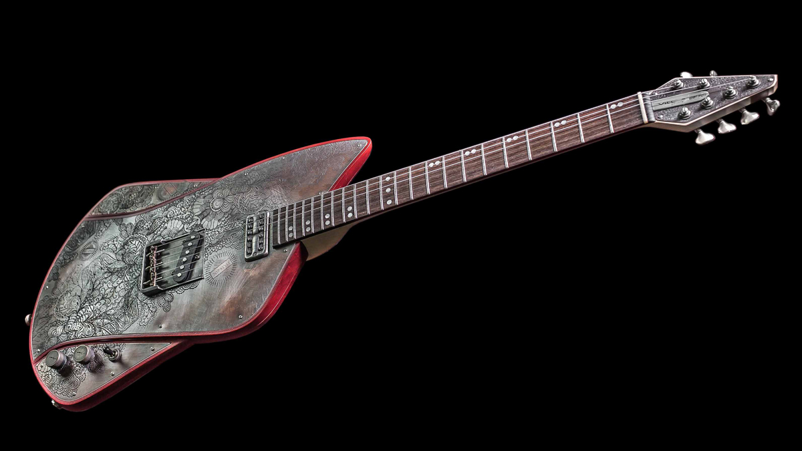
Model 707
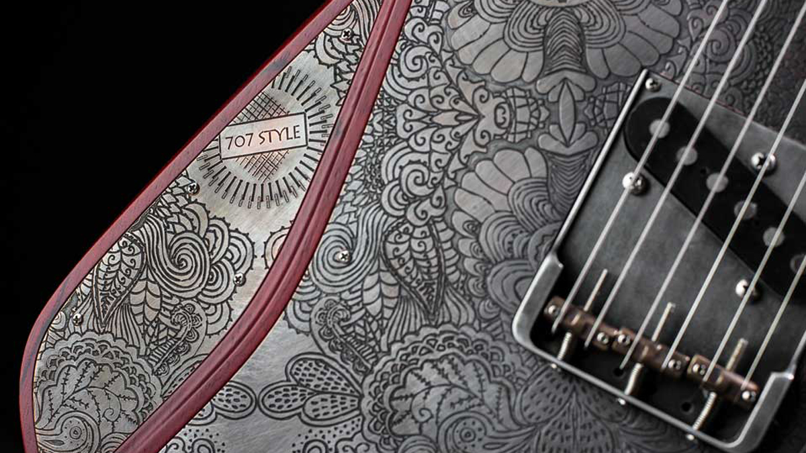
Model 707
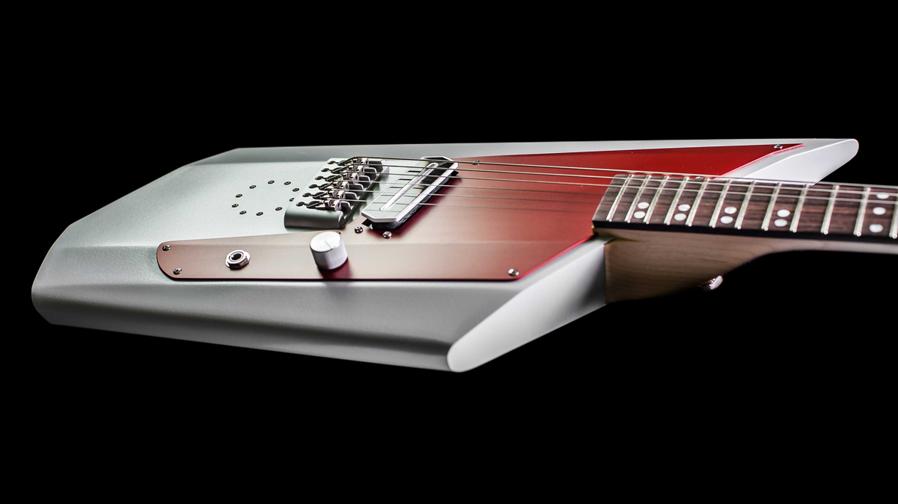
Model 717
Body: Aluminium
Construction: Neck-through-body. Super lightweight: 2,6 kg
Finish: Powder-coated aluminum finish
Neck: Maple with 2 mahogany stripes
Fingerboard: Rosewood
Scale / Frets: 25 1/2" · 22
Bridge: Custom ETS Bridge
Pickups: 1x Vintage Vibe Guitars Charlie Christian Pickup (CCRider)
Electronics: 1 Volume
Number of pieces: 10
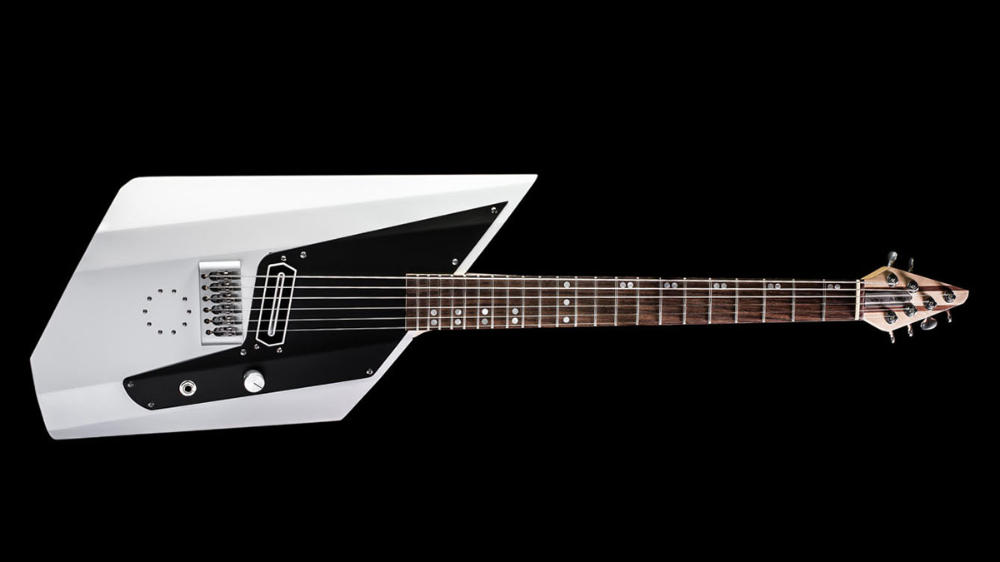
Model 717
White / black pickguard
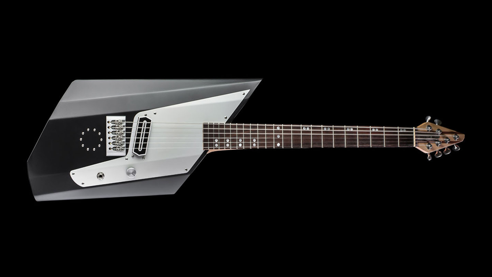
Model 717
Black / grey pickguard
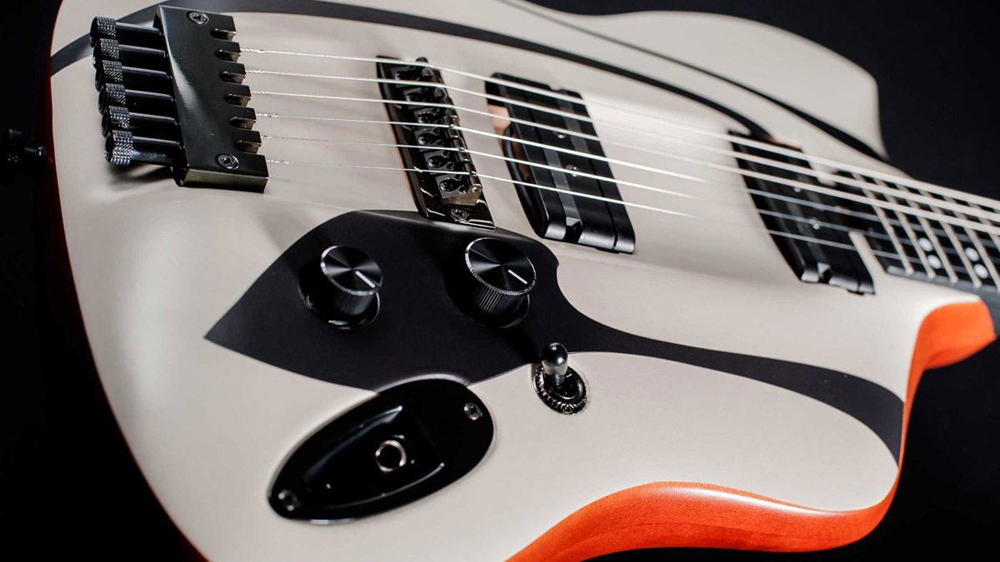
Model VIUS
Body: European Alder
Design: Headless
Finish: Top: custom graphics / Back: clear varnish
Neck: Bolt-on, one-piece moulded carbon neck by Moses USA
Scale / Frets: 25 1/2" · 22
Bridge & tuning tailpiece: ABM 3800c Headless System
Pickups: 2x Lace Alumitone Pickups
Electronics: 3-Way Switch
Number of pieces: 10
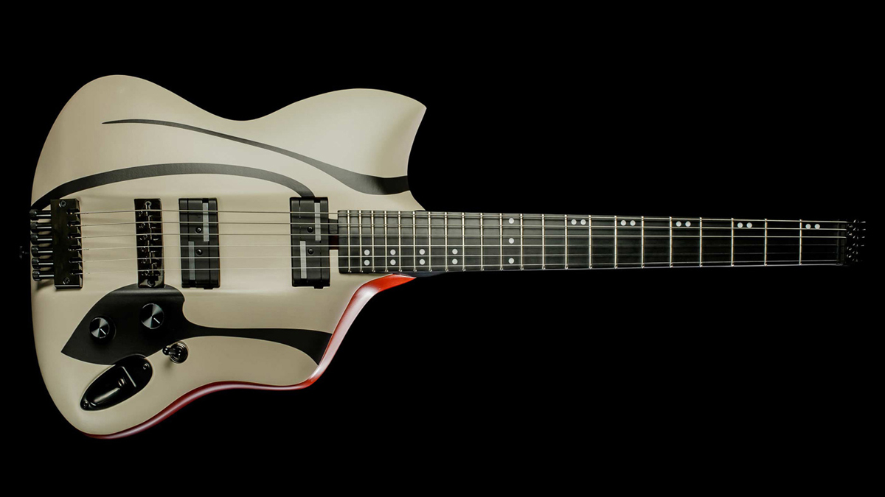
VIUS Panto
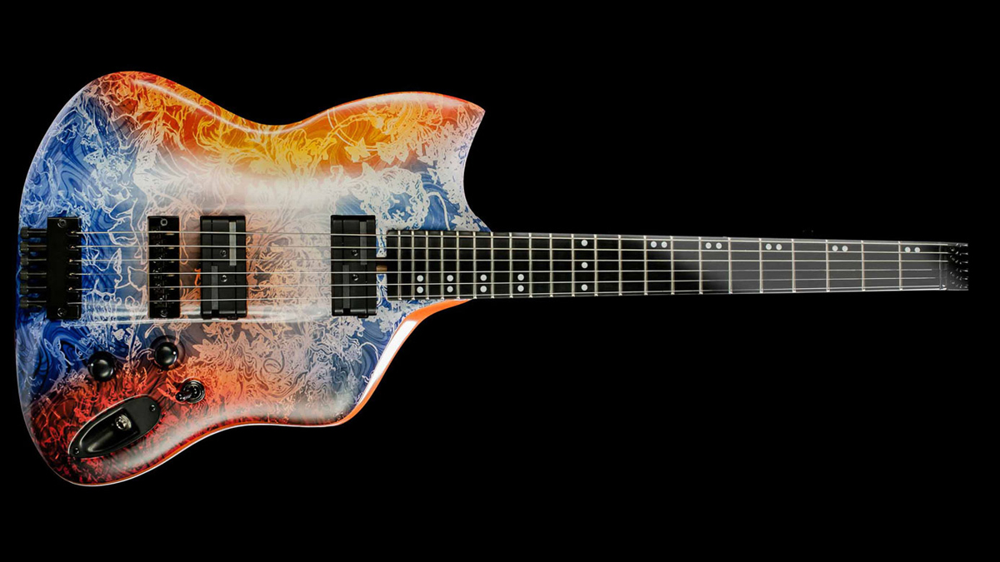
VIUS Medusa
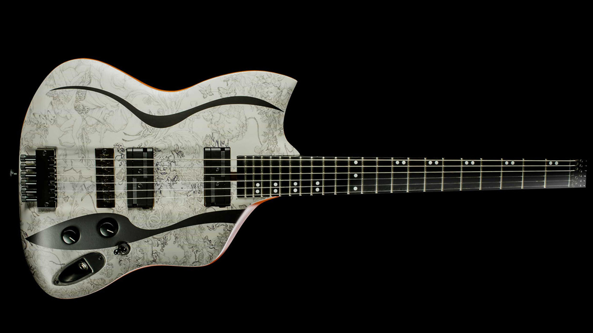
VIUS Malinda
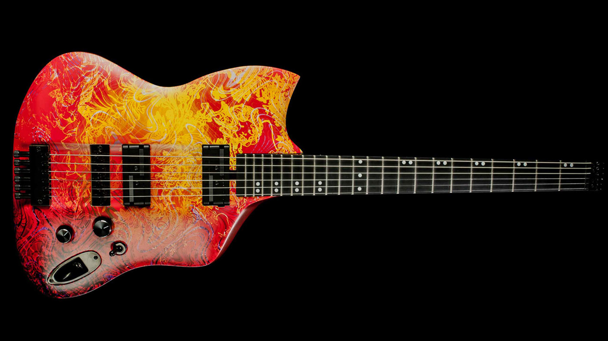
VIUS Nova

VIUS Bubble
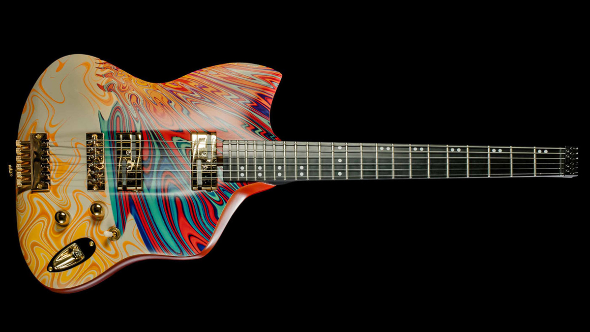
VIUS Isleen
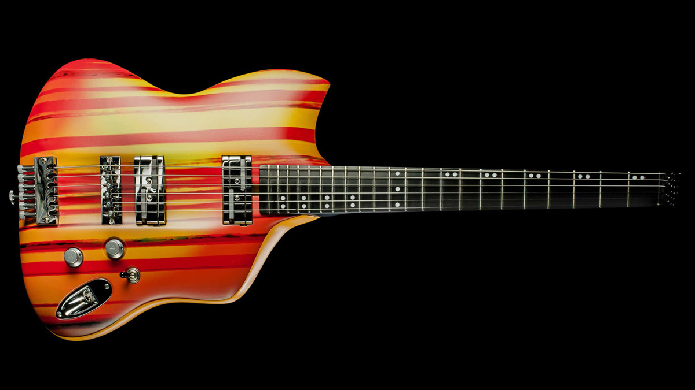
VIUS Hog
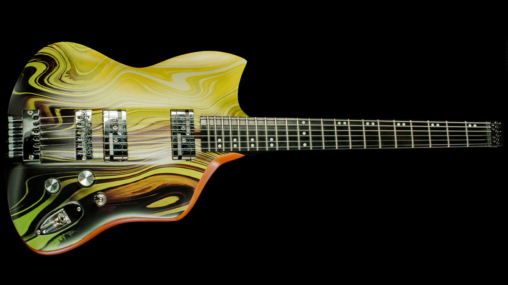
VIUS Ladon
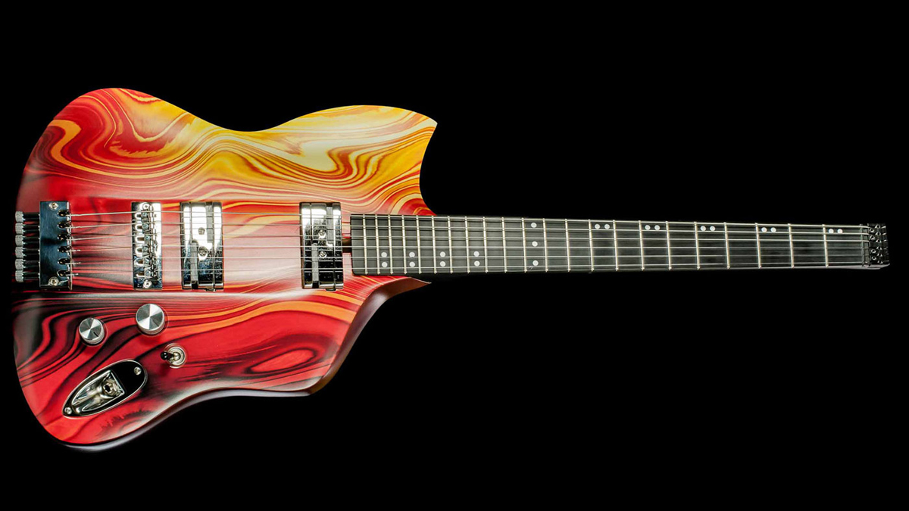
VIUS Vasuki
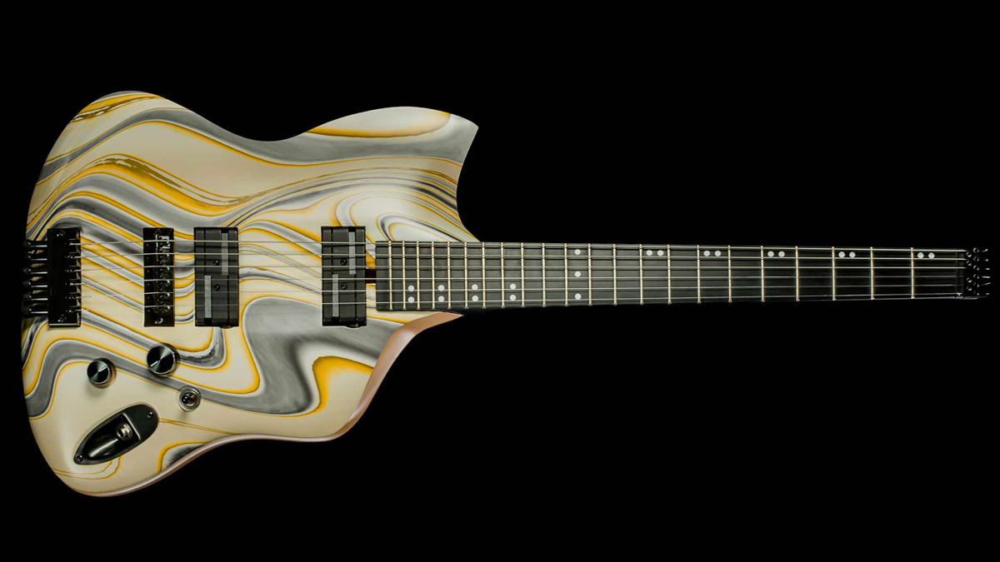
VIUS Tanis